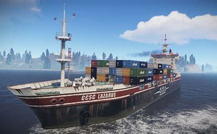

De leukste survival game: Rust ☢
Rust is een multiplayer overlevingsgame waarin spelers grondstoffen verzamelen, wapens maken en onderdak bouwen om te overleven in een gevaarlijke open wereld vol vijandige spelers en wilde dieren.
De game is ontwikkeld door Facepunch Studios en werd voor het eerst uitgebracht in 2013. Sindsdien heeft het een grote en toegewijde fanbase opgebouwd, die het spel blijft spelen en ondersteunen met regelmatige updates en uitbreidingen.
De bekende Rust Fishing Village Reggae muziek
In Rust draait de core gameplay om overleven in een ruwe, open wereld. Spelers beginnen met niets en moeten grondstoffen verzamelen, zoals hout, steen en voedsel, om gereedschappen, wapens en onderdak te maken. De belangrijkste uitdagingen zijn honger, kou, wilde dieren, en andere spelers, die vaak vijandig zijn. PvP (player-versus-player) gevechten zijn een groot onderdeel van het spel, omdat je zowel solo als in groepen kunt vechten voor middelen. Spelers kunnen basissen bouwen en verdedigen tegen raids van andere spelers, waarbij complexe valstrikken en verdedigingen worden ingezet. Crafting en verkenning zijn essentieel, en de wereld is dynamisch en onvoorspelbaar: elke beslissing die je maakt, kan je lot bepalen, van samenwerken met anderen tot verraden voor je eigen gewin.

Het uiteindelijke doel van Rust is simpel: overleven zo lang mogelijk in een meedogenloze wereld. Hoewel er geen vaste verhaallijn of einddoel is, ligt de nadruk op het verzamelen van grondstoffen, bouwen van basissen, verdedigen tegen andere spelers, en je vaardigheden verbeteren om te blijven bestaan. Spelers bepalen hun eigen doelen, zoals het domineren van een server, het opbouwen van een grote clan, of simpelweg overleven in de uitdagende omgeving. Het spel draait om zelfontwikkeling, strategie, en het omgaan met de onvoorspelbare interacties met andere spelers.